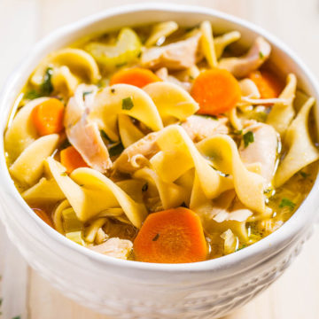

Chicken Noodle Soup Recipe

Ingredients:
1 tablespoon butter
1/2 cup chopped onion
1/2 cup chopped celery
4 (14.5 ounce) cans chicken broth
1 (14.5 ounce) cans vegetable broth
1/2 pound chopped cooked chicken breast
1 1/2 cups egg noodles
1 cup sliced carrots
1/2 teaspoon dried basil
1/2 teaspoon dried oregano
salt and pepper to taste
Save this recipe
Directions:
In a large pot over medium heat, melt butter. Cook onion and celery in butter until
just tender, 5 minutes. Pour in chicken and vegetable broths and stir in chicken,
noodles, carrots, basil, oregano, salt and pepper. Bring to a boil, then reduce heat
and simmer 20 minutes before serving.